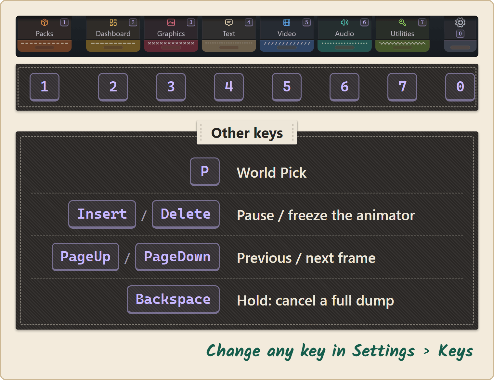

Hotkeys
Reference · everyone.
Every key Stitchwork uses in the game.
You can change each one in Settings.
Note: when a text input field has focus anywhere on screen (a search box, a dialogue editor, the conditions editor), Stitchwork's hotkeys are silenced so your typing doesn't trigger them. A click outside the field, a right click, or Enter in a one-line field ends the edit. Esc does not end it: Esc belongs to the game.
Esc opens the game's menu, and it cannot be a Stitchwork key. To cancel in Stitchwork, use a right click.
Default keybinds

| Default key | Action | Notes |
|---|---|---|
1 (top row, Alpha1) | Open or close Packs | The Pack Manager panel. With changes you did not apply, the first close asks what to do (see below). |
2 (top row, Alpha2) | Open or close Dashboard | The Overview panel: health checks, working folder, image editor, target pack (with Push and Pull), and the file lists per asset type. Useful as a quick health check. |
3 (top row, Alpha3) | Open or close Graphics | Preview and Library panels; modes Animation, T2D Textures, T2D Log, Colors. Find sprites, browse atlases, inspect animations, and recolor scenes (Colors). |
4 (top row, Alpha4) | Open or close Text | The dialogue and UI text editor. Recent and Editor panels; modes Game text and Translate. Recent lists the text keys that the game used in this session. |
5 (top row, Alpha5) | Open or close Video | One Cinematics panel: the cutscene replacement table and the Live cinematic log. |
6 (top row, Alpha6) | Open or close Audio | Live log and Clip browser (searchable) panels. Click a name in the Live log to copy it and find it in the Clip browser. |
7 (top row, Alpha7) | Open or close Utilities | Probes (frame rate, memory, and the frame profiler for slowdowns) and Dumping panels. Dumping holds the sprite dump switch, the text dump and the full-game dump (dumping reference). The tab was formerly Performance. |
0 (top row, Alpha0) | Open or close Settings | The Settings window: the settings that change Stitchwork everywhere, keys included. The gear tab, at the right end of the pull tabs, opens it too. See Settings. |
| P | Start World Pick | Click an object to open it in Graphics: an animated tk2d object in Animation, a T2D sprite in T2D Textures. The mouse wheel moves through overlapping objects. Press P again, or right-click, to cancel. |
| Insert / Delete | Pause / Freeze the selected animator | Graphics → Animation transport (The Animation Mode). |
| PageUp / PageDown | Previous / next frame | A step pauses a playing animation first, so you need not pause it. The transport buttons show these live. |
FullDumpKey (unbound by default; hold 1.5 seconds) | Full asset dump | Hold the key for 1.5 seconds to start; a tap does nothing. The key works only while Sprites on scene load is on, and only from a game in progress. Otherwise a press shows the reason at once. |
| Backspace (hold about a second) | Cancel a running full dump | FullDumpCancelKey. Progress is saved either way. |
If your keys are different from this table, Settings › Keys shows the keys that Stitchwork uses in your game. The transport buttons in the Animation mode show them too. A Stitchwork.cfg from an older version can keep old keys.
Changing keybinds
Open Settings (key 0, or the gear tab) and go to Keys. Every Stitchwork key is there. A change applies at once.
- Click a key, then press the new key. A right click or a click elsewhere cancels.
- To remove a key, click it, then click No key.
- Right-click a key to put its default back.
- Defaults puts every key back. Click it two times.
- A key that another Stitchwork key also uses turns red. Then you can Swap the two keys, Undo, or Keep both.
- A key that the game also uses turns amber. Its tooltip names the game's action in your language, for example "Jump". A press of that key then does both. You can Undo, or Keep the key.
The keys are also in the BepInEx config file, in the [Keybinds] section:
BepInEx/config/Stitchwork.cfgThe names are ShowPackManager, ShowSettings, DevHubDashboard … DevHubPerformance (the Utilities tab keeps its old name here), WorldPick, FullDumpKey, FullDumpCancelKey, and the AnimationController…Key transport keys. A value is one of Unity's KeyCode names. A change that you save in the file applies at once, while the game runs.
Common reasons to remap:
- The number-row keys (
Alpha0-Alpha7) might conflict with how you assign hotkey items in-game. If the game uses one of your keys, Settings › Keys shows that key in amber. Change it to a key that the game does not use.
Pull tabs and panels
Move the mouse to the top edge of the screen, and the pull tabs drop down: Packs, Dashboard, Graphics, Text, Video, Audio and Utilities. A narrow gear tab at the right end opens Settings. Each tab shows its key in its top-right corner; the gear tab shows its key under the gear. Click a tab to open it or to close it. A panel has no close button of its own.
On a screen wider than 16:9, the game draws its HUD in a 16:9 area in the middle. The pull tabs and the status badge stay in that area too, beside the game's own interface. Panels still dock at the edges of the screen.
A tab blinks when a decision waits for you, for example a working folder or an image editor that you did not choose yet. Its tooltip says what waits. While the tabs hide, a blinking tab shows a little below the top edge.
In Settings › General, the Pull tabs switch hides the tabs, and the Creator tabs switch hides the creator tabs (Settings). The keys work either way.
Packs, Settings and the Dev Hub panels never show together. Open one, and the others close. Packs keeps your staged changes.
Panels with the mouse
Each tab opens as docked panels. With the mouse:
- Drag a panel by its title plate or its frame. Drop it at a screen edge to dock it there.
- Double-click a title plate to send the panel back home.
- A floating panel that you rolled up to its bar still drags by the bar. Drop it in a dock to open it there, or double-click the bar to send it home.
- The arrow on the title plate rolls one panel toward its dock edge; click again to unroll it.
- Right-click to roll all open panels out of the way. Right click again to unroll them. If something waits for a cancel (a drag, an armed button, an open list), the right click cancels that first.
- The i button beside the title shows the help for the tab.
Other mods
When DebugMod's panels appear, Stitchwork's panels close. While DebugMod's panels show, Stitchwork's keys open nothing, and a message tells you what to do: hide DebugMod's panels with DebugMod's toggle key, then press the key again. Stitchwork steps aside in the same way for Benchwarp's menu, FsmMaster's overlay, Architect's edit mode and UnityExplorer's menu. In Architect's edit mode, Stitchwork's keys open nothing, because Architect uses the number keys for its tools. The first press shows a notice that names Architect's edit key. See Companion Mods.
Dialogs
Some actions ask first, in a dialog. Each answer shows a number key: hold the key to pick that answer. Hold Enter to pick the first answer, which is the safe one. A right click, a click outside the dialog, or Cancel closes it and does nothing.
Stitchwork's hotkeys are ignored while a dialog shows.
Notices
A notice tells you that something happened: a saved file applied, packs applied, or a key that opens nothing right now. To keep a notice, put the pointer on it: its countdown stops, and an x shows in its corner. Click anywhere on the notice to close it. While you play with the cursor hidden, a notice closes by itself.
Translate keys
In the Text tab's Translate mode, with the cursor in the translation:
- Ctrl + Enter presses the main button (Save, Pass or Keep).
- Ctrl + Up and Ctrl + Down move to the previous or next string.
Awoo!
Pack Manager (separate from Dev Hub)
The Pack Manager is its own panel, titled Packs — different from the Dev Hub tabs. It lists your installed packs, lets you toggle them on or off, configure their conditions, and switch profiles.
If you have changes that you did not apply, the first close asks what to do: Apply & close, Discard & close or Keep & close. Press the key again to close and keep the changes.
Status badge
The small badge in the bottom-left corner is the status badge. It's not a window you open with a key. Line one shows how many packs are on, plus "N covered" when packs replace the same assets. Line two shows the scene. Hover over the badge for the sprite, clip and atlas counts.
Click the badge to open Packs.
The eye at the badge's right end sets auto-hide: the badge then slides past the left edge until the cursor comes near the corner. Nothing of the badge stays on screen while it hides. To turn the badge off completely, switch off Status badge in Settings › General. The badge also hides in pick mode and while DebugMod's panels show.
Settings
Press 0, or click the gear tab at the right end of the pull tabs. The Settings window holds the settings that change Stitchwork everywhere. Every change applies at once; there is no Apply button. The chips above the page jump to each section:
- General: the interface Language, Pull tabs, Creator tabs, Reduced motion and Status badge. With UnityExplorer or CinematicUnityExplorer installed, Step aside for that mod shows here too: switch it off to keep Stitchwork open beside the explorer's menu. With Creator tabs off, only the Packs tab and the gear tab show, and Packs moves to the right end, beside the gear. Three levers set the look of the panels: see The panel levers.
- Folders: the Global packs folder. When you change it, the Pack Manager reads the packs from the new folder at once, and keeps your changes that are not applied yet.
- Keys: every Stitchwork key. Click a key, then press the new key. See Changing keybinds.
- Rendering: See-through foreground (off by default: the scene art in front of Hornet fades in a soft circle, so you can see her behind it; it costs frame rate), Clean sprite edges (CSP fix), Fallback fonts, Pack fonts, and Appliqué.
- Video: three switches for cinematics.
- Advanced: the log file (Open log, Show in folder), Verbose logging, and Reload the room on Apply (on by default; when it is off, Apply changes the packs in place, see The Pack Manager).
With the pull tabs off, the keys still open everything. Open config file, at the foot of the window, opens BepInEx/. A change that you save in this file applies at once, too, while the game runs. A message names the settings that changed. These settings apply only at the next launch, and the message says so: IncrementalGCTimeSliceMs, HeapReserveMB, AutoEnableIncrementalGC and WorkingRootPath.
The panel levers
Three levers in General set the look of the panels. Text and controls always stay fully visible.
| Lever | Default | What it does |
|---|---|---|
| Focused panel | 1 | How solid a panel's frame and page are while you use it. You use a panel while the pointer is over it, while you move it, or while a field in it is selected. |
| Unfocused panel | 0.55 | The same, while the pointer is somewhere else. |
| Panel glass | off | Blurs the game and its HUD behind a see-through panel, with a fine grain. At 0 it is off and costs nothing. The blur does not include other mods' panels. It is tested on Windows only. |
The arrow icon at the end of a lever's row puts the default back. Its tooltip shows the default.
Hotkeys NOT included in Stitchwork
Stitchwork doesn't ship a "toggle skin pack X" hotkey or per-pack hotkeys. If you want quick toggling, configure that pack with conditions — it can switch on or off based on game state automatically. For one-off manual toggling, the Pack Manager is the workflow.